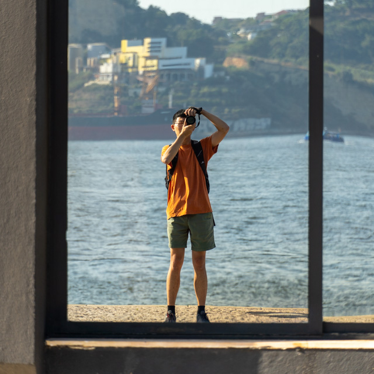
Tianshu Huang
Tianshu Huang
I'm an amateur photographer who mostly takes travel photos; recently, I've also been dabbling in events and other research-related work. I started (somewhat) seriously trying to learn photography in 2022; this page documents my best work so far.
You can find my academic page here. Please contact me at tianshu2@andrew.cmu.edu.
2025
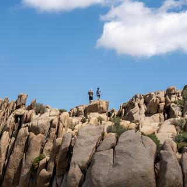
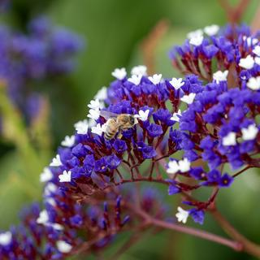
2024
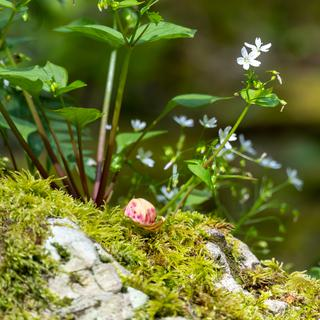
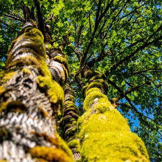
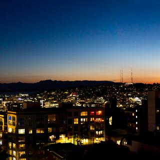
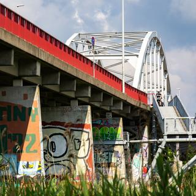
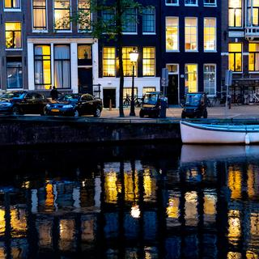
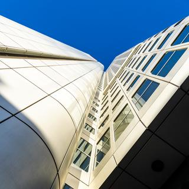

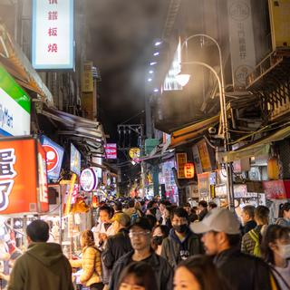
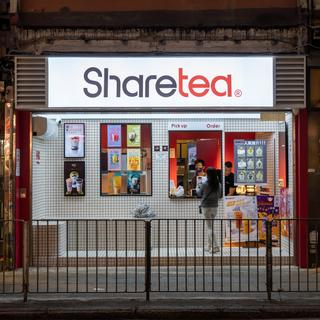
2023
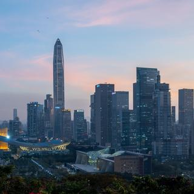
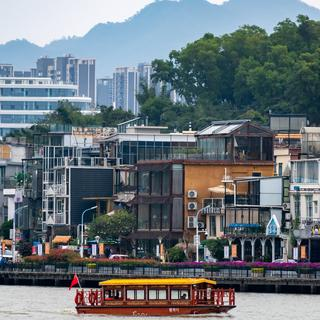
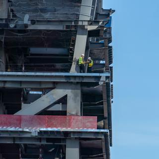
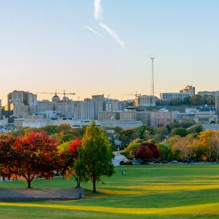
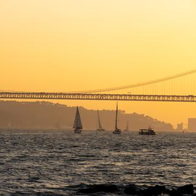
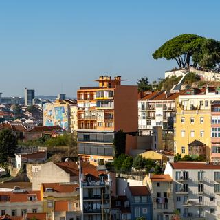
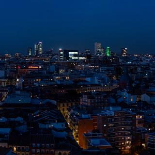
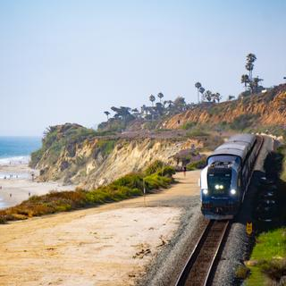
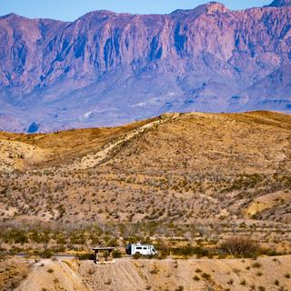
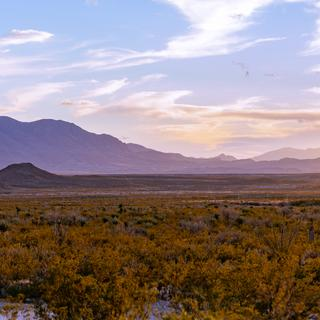
2022
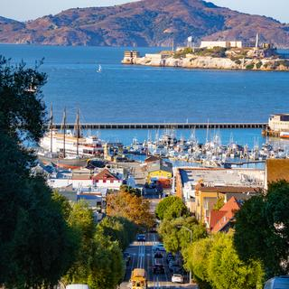
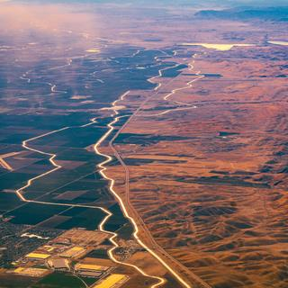
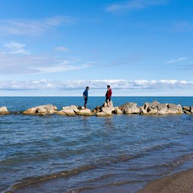